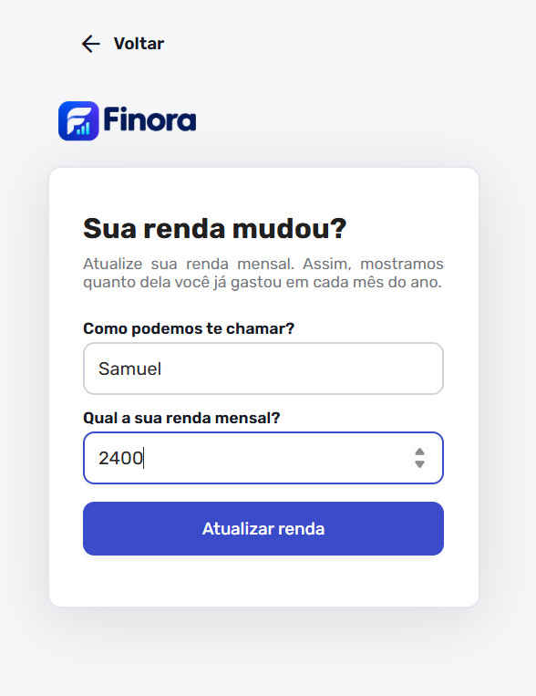
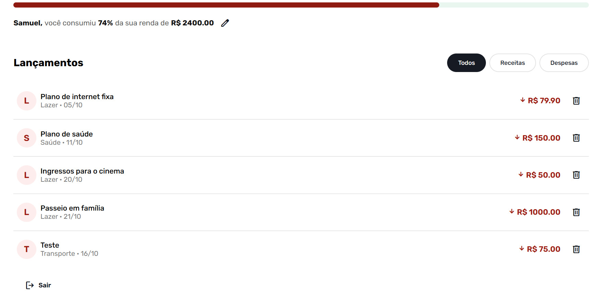
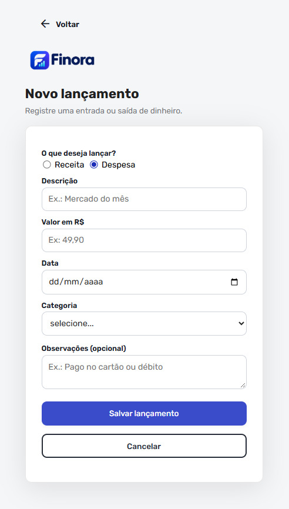
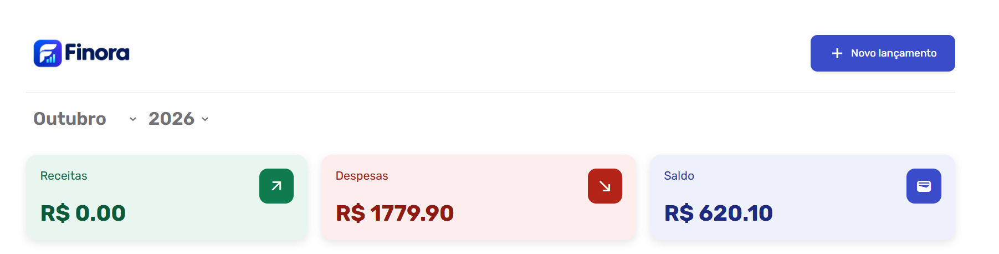

Material de apoio
DESENVOLVIMENTO WEB I
Turma [DDW-2602]
Projeto implementado
O projeto final da turma DDW-2602 consiste no desenvolvimento de um sistema de controle de finanças pessoais, denominado Finora.
O desenvolvimento foi realizado de forma colaborativa, com cada aluno ficando responsável pela implementação de uma parte do sistema. Dessa forma, todos puderam contribuir para a construção do projeto final.



